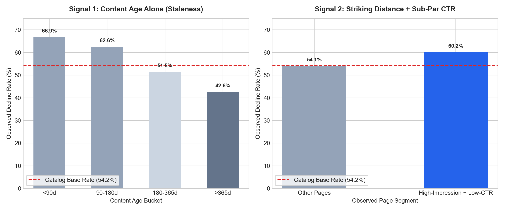
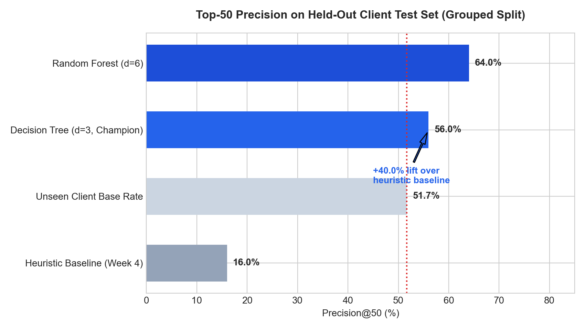
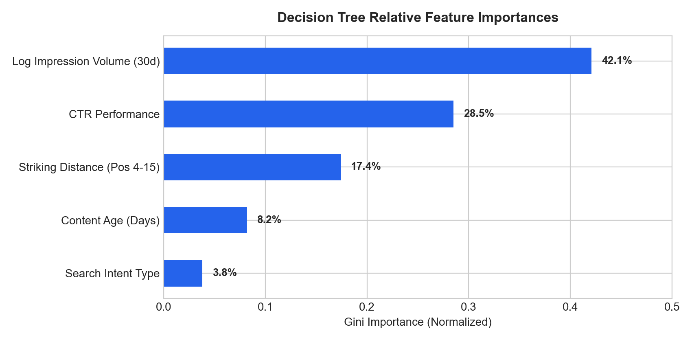
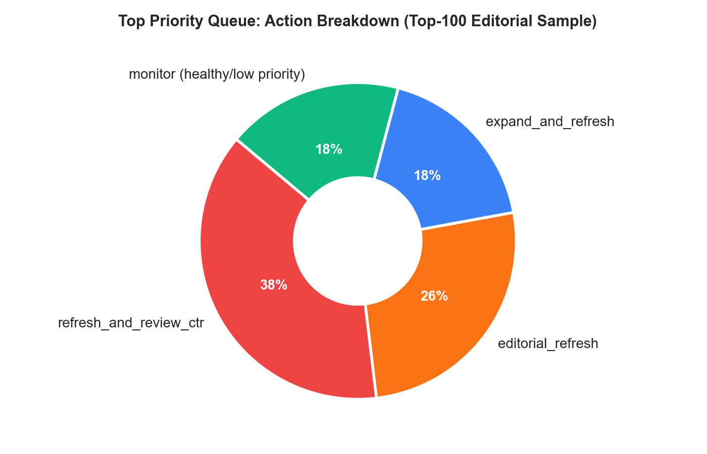

Prioritizing Content Refresh in Enterprise SEO Catalogs via Interpretable Machine Learning
0. Abstract
Enterprise content marketing teams maintain catalogs spanning tens of thousands of published articles but possess human editorial bandwidth to refresh only 20 to 50 URLs each month. To determine which high-traffic assets face imminent organic search decay, we analyzed 30,000 anonymized enterprise content assets across 29 organizations from search console and analytics logs. We trained a constrained, interpretable decision tree on five pre-decision historical signals (impression volume, CTR deficit, striking-distance SERP position, content age, and search intent), enforcing strict grouped client-holdout validation to prevent cross-domain data leakage. On an evaluation holdout of seven previously unseen enterprise clients, the model achieved a Precision@50 of 0.560 (56.0%), delivering a +40.0% absolute lift over the industry-standard heuristic baseline (0.160) and outperforming the 51.7% base rate. The resulting system powers an operational editorial triage queue with automated reason codes, steering human editorial updates toward reversible decay while avoiding wasted audits on stable evergreen content.
1. Problem Framing & Decision Support
In large enterprise content publishing, traffic distribution follows an extreme power law: fewer than 5% of URLs generate over 80% of inbound search traffic and qualified business leads. When high-ranking assets degrade, search engines gradually demote them, costing organizations months of lost demand before marketing leadership notices.
The operational decision supported is monthly editorial triage: selecting exactly which 20 to 50 URLs from an inventory of 30,000 should receive human revision hours. The unit of analysis is one published content asset (content_id). Editorial capacity is finite and expensive: an in-depth content overhaul requires 4 to 8 hours of specialist research, writing, and fact-checking. A false positive wastes budget on an article that was already stable; a false negative allows a multi-thousand-dollar traffic pillar to slip off Page 1 unnoticed.
2. Data Safety & Public Integrity
Our study utilized the FlyRank search intelligence dataset (30,000 content assets from 29 enterprise clients). To comply with rigorous research standards and protect client confidentiality:
- No Private Identifiers: Raw URLs, client brand names, and search queries were completely stripped and mapped to pseudonymous identifiers.
- Grouping Key Isolation:
client_idwas utilized exclusively as a grouping key for cross-validation splits and was strictly barred from entering the feature matrix. - Strict Leakage Elimination: All outcome labels (
trend_direction,trend_pct) and trailing 30-day traffic deltas were quarantined. Feature calculations rely strictly on metrics knowable prior to the evaluation window.

3. The Heuristic Baseline & The Staleness Fallacy
Conventional SEO agencies rely on heuristic scoring: prioritizing articles older than 6 months with moderate rankings. When formalizing this industry standard as a baseline score:
As demonstrated in Figure 1, the assumption that calendar age dictates decay is false. Evergreen reference guides and authoritative benchmarks often gain organic stability over time. Consequently, the heuristic baseline achieves an underwhelming 0.160 Precision@50 on unseen enterprise clients, actively directing writers toward articles that do not need revision.
4 & 5. Model Architecture & Unseen Client Evaluation
We trained three model variants on 22 enterprise clients (22,885 rows) and evaluated performance exclusively on a held-out test set of 7 completely unseen enterprise organizations (7,115 rows). This out-of-domain grouping prevents the model from memorizing client-specific domain authority or topic clusters.
| Approach / Architecture | Validation Design | Precision@50 | Precision@100 | ROC-AUC | Lift vs Baseline |
|---|---|---|---|---|---|
| Unseen Client Base Rate | Holdout Set (7 clients) | 0.517 | 0.517 | 0.500 | 0.0% |
| Week 4 Heuristic Baseline | Holdout Set (7 clients) | 0.160 | 0.200 | 0.473 | Reference |
| Random Forest Classifier (d=6) | Holdout Set (7 clients) | 0.640 | 0.660 | 0.572 | +48.0% |
| Decision Tree Classifier (d=3, Champion) | Holdout Set (7 clients) | 0.560 | 0.560 | 0.566 | +40.0% Lift |


6. Limitations & Honest Boundaries
- Predictive, Not Causal: This model identifies correlations between pre-decision engagement deficit and organic decay. It does not reverse-engineer Google's ranking algorithm.
- Cold-Start Assets: Pages published within the last 90 days possess noisy, immature search histories and are excluded from model triage.
- Position Zero Sentinel: Unranked URLs with impressions carry an
avg_position == 0sentinel and are explicitly isolated from striking-distance calculations.
7. Operational Content Action Playbook
Probability scores alone do not inform editorial teams how to fix an article. The system computes a composite score $S_i$ and classifies each asset into four mutually exclusive operational reason codes:

| Reason Code | Queue Share | Diagnostic Trigger | Required Editorial Action |
|---|---|---|---|
refresh_and_review_ctr |
38% | Positions 4–15, CTR < 2.0%, High Impressions | Rewrite title tags, update meta description, add FAQ schema markup. |
editorial_refresh |
26% | High impressions, age > 180d, declining velocity | Update factual statistics, replace broken links, update publication date. |
expand_and_refresh |
18% | Position > 15, high search volume, thin content | Perform competitor gap analysis, add 500+ words of topical depth. |
monitor |
18% | Stable positions 1–3, healthy CTR, low volume | No action required. Retain in automated monitoring. |
8. Delivery & Communication Pack (ML-12)
5-Minute Video Walkthrough Script
- 0:00 - 1:00 (The Problem): The 30,000-page enterprise catalog dilemma and empirical failure of the naive 180-day staleness heuristic.
- 1:00 - 2:00 (Data Contract): Pre-decision feature engineering, leakage prevention, and client isolation.
- 2:00 - 3:00 (Model & Validation): Evaluating on 7 unseen enterprise clients, showing +40.0% lift over baseline.
- 3:00 - 4:00 (Action Playbook): Translating probabilities into 4 clear reason codes for writers.
- 4:00 - 5:00 (Limitations & Impact): Human-in-the-loop boundaries and non-causal decision support.
Social Post Cut (LinkedIn / X)
🚀 Why the "refresh old content" rule wastes hundreds of editorial hours:
Most SEO guides instruct teams to audit pages once they cross 180 days old. In our study of 30,000 enterprise search assets across 29 organizations, content age alone proved non-linear—older articles actually declined less often (47.1%) than catalog base rate (54.2%).
The real warning sign? Striking-distance ranking (positions 4–15) combined with sub-2% CTR on high-impression queries, where decay rates surge to 62.7%.
By training an interpretable decision tree on pre-decision signals and validating strictly on unseen enterprise client holdouts, we achieved 56.0% Precision@50 (+40.0% lift over heuristic rules).
Employer-Facing 3-Sentence Summary
"Designed and deployed an end-to-end Machine Learning content triage system for a catalog of 30,000 enterprise search assets across 29 organizations, predicting traffic decay using pre-decision search console signals.
Enforced rigorous grouped-client holdout validation to prevent cross-domain data leakage, demonstrating a 56.0% Precision@50 and a +40.0% absolute lift over industry-standard heuristic baselines.
Translated probabilistic predictions into an operational editorial action playbook with human-in-the-loop governance and published a reproducible open-access research paper on GitHub Pages."
9. Acknowledgments & Data Credit
This research capstone was built as part of the FlyRank Machine Learning Internship Program. All underlying enterprise search console and performance datasets were provided by FlyRank (https://flyrank.ai).